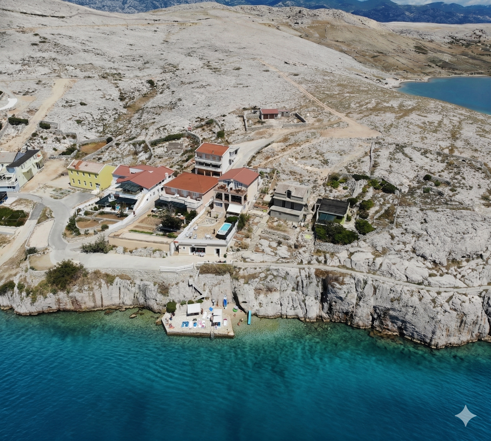

Prohlédněte si, jak to u nás vypadá — dům, okolí i místa, která snadno navštívíte.
Rodinný dům v Zubovićích stojí přímo nad mořem s přímým přístupem k soukromé pláži. Šest apartmánů, prostorné terasy s výhledem na Jadran a bazén obklopený kamennými terasami — to vše jen pár kroků od vody.

K domu patří bazén s lehátky a slunečníky, ideální pro odpočinek během horkých letních dnů. Soukromá pláž je přístupná přímo z pozemku — stačí sejít pár schodů a jste u křišťálově čistého moře.
Okolí Zubovićích nabízí desítky pláží — od kamenných zátok s tyrkysovou vodou po písčité pláže s pozvolným vstupem do moře. Většina je dosažitelná pěšky nebo krátkým přejezdem autem. Voda je průzračná a moře čisté po celou sezonu.
Pag je ostrov kontrastů — měsíční krajina na severu, olivové háje na jihu, historické město Pag s krajkovým dědictvím a slavné solanky. Unikátní atmosféra, pažský sýr, jehněčí pod pekou a 2 700 hodin slunce ročně.
Z Jadranky snadno vyrazíte na celodenní plavby na ostrovy Rab, Olib nebo Silba, navštívíte národní park Paklenica nebo se vydáte na výlet do Zadaru. Celý ostrov Pag projdete autem za 40 minut — každý den můžete objevit něco nového.